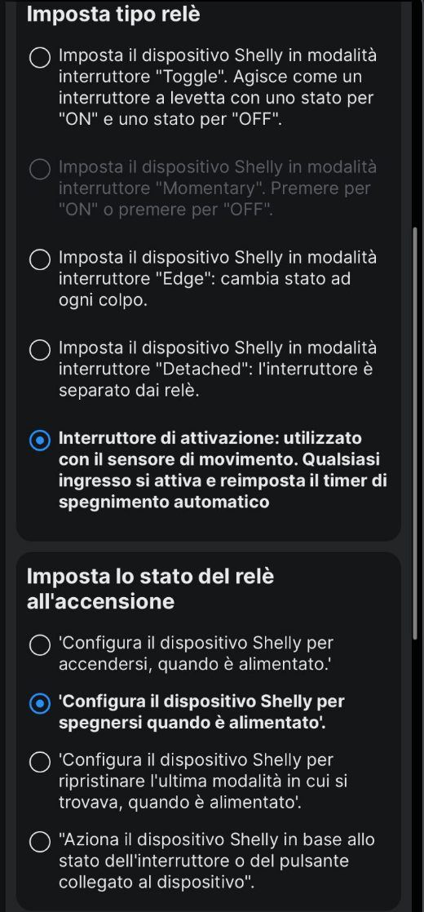
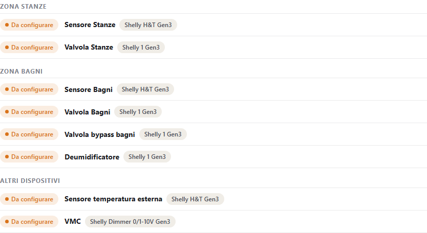

Guida per l'amministratore dell'impianto
Come funziona, come si collegano gli Shelly, cosa fa l'impianto quando manca qualcosa. Il software lo forniamo noi.
Come funziona
La scheda (Arduino UNO Q) fa girare LocalHome e il broker MQTT: gli Shelly parlano con lei sulla rete di casa, senza cloud.
| Cosa | Dispositivo |
|---|---|
| Sensore Stanze, Bagni, esterno | Shelly H&T Gen3, a batteria (sezione 9) |
| Valvola Stanze, Bagni | Shelly 1 Gen3 |
| Bypass bagni, deumidificatore | Shelly 1 Gen3 (sezione 8) |
| VMC | Shelly Dimmer 0/1-10V Gen3 |
- Termostato: programmazione settimanale per zona e stagione. D'inverno apre sotto l'obiettivo, d'estate sopra. Senza temperatura non apre.
- Stagione: una per tutto l'impianto, in admin → Stagione. D'estate Bagni non si raffresca né si programma (condensa).
- Pagine: home
http://<scheda>.local:5000per chi abita; admin…/climate-adminper chi gestisce.
Perché il comando a tempo
LocalHome non dice "accendi" ma "accendi per 15 minuti", ripetuto ogni 5 minuti. Se la scheda si ferma, lo Shelly chiude la valvola da solo entro 15 minuti. Vale per valvole di zona e deumidificatore; il bypass bagni no (sezione 8).
| Cosa succede | Risultato |
|---|---|
| Scheda o LocalHome fermi meno di 15 min | Niente: al riavvio il comando viene rinnovato. |
| Scheda ferma più di 15 min | Lo Shelly chiude; al ritorno LocalHome riapre se serve. Avviso in Successo nelle ultime 72 ore. |
| Shelly senza corrente | Valvola chiusa; al ritorno LocalHome riapre se serve. Un riavvio inatteso in Dispositivi. |
| Blackout di tutta la casa | Lo Shelly riparte spento, poi decide LocalHome. |
Provato sulla scheda di produzione con Plus 1 (4/10) e 1 Gen3 (5/10).
1. Collegamento
| Morsetto | Cosa ci va |
|---|---|
| N / L | Neutro e fase dell'impianto. |
| I | Ponte da L (il relè è un contatto pulito, fino a 16 A). |
| O | Fase della valvola (più valvole: in parallelo). |
| Neutro valvola | Al neutro dell'impianto, non allo Shelly. |
| SW | Libero. |
2. App Shelly: prima accensione
- Aggiungilo sulla rete Wi-Fi principale e dagli un nome (Valvola Stanze…).
- Aggiorna il firmware (Gen3: almeno 2.0.1).
- Annota l'ID (Informazioni dispositivo), es.
shelly1g3-c0ffee000004.
3. App Shelly: MQTT
| Impostazioni → MQTT | Valore |
|---|---|
| Abilita MQTT | attivo |
| Server | <nome-scheda>.local:1883 (es. antonio.local:1883) |
| Prefisso | quello proposto o uno tuo (es. shelly1g3-stanze): in LocalHome scrivi il
prefisso se l'hai cambiato (sezione 13) |
| Generic status update / RPC over MQTT | attivi |
| SSL, utente, password | spenti / vuoti |
4. App Shelly: ingresso/uscita e timer


| Impostazione | Scegli |
|---|---|
| Tipo relè | "Detached" |
| Stato all'accensione | "…per spegnersi quando è alimentato" |
| Accensione automatica | spenta |
| Spegnimento automatico | attivo, 00:15:00 |
| Pulsante o interruttore | indifferente (SW è libero) |
5. In LocalHome
Su una scheda nuova (o dopo Reset di fabbrica) ci sono già Stanze, Bagni e tutti gli Shelly, Da configurare. Non è un guasto: non vengono comandati e una zona senza sensore tiene la valvola chiusa.

- Admin → Zone (bypass, deumidificatore, sonda esterna, VMC: Dispositivi → Da collegare qui): incolla l'ID o il prefisso. Uno alla volta va bene.
- Esci dal campo: LocalHome interroga lo Shelly e dice cosa correggere (un H&T a batteria dorme e non risponde: è normale).
- Correggi nell'app e premi Riprova fino a Impostazioni a posto ✓.
- Salva e riavvia LocalHome dal pulsante in alto.

Il controllo continua. Quando cambi un'impostazione nell'app, lo Shelly lo annuncia e LocalHome la rilegge in pochi secondi: la riga in Dispositivi si aggiorna da sola. Se un'impostazione cambia per altro (aggiornamento, reset), la riga diventa Impostazioni da correggere e dice cosa correggere.
6. Stato dei dispositivi
Admin → Dispositivi: tutti i dispositivi, raggruppati per zona. Tocca la riga di uno Shelly per il dettaglio.
| Stato | Significato |
|---|---|
| OK | Funziona. Nel dettaglio, in grigio, le note che non sono guasti: corrente mancata, riavvii voluti, segnale debole. |
| Batteria scarica | C'è qualcosa da fare: l'etichetta dice cosa, il riquadro arancione nel dettaglio dice come. |
| Non risponde | Niente da LocalHome: corrente, Wi-Fi o MQTT (o un nome sbagliato, sezione 13). |
| Da configurare | Il suo ID non è ancora stato inserito (sezione 5). |


Shelly a corrente (valvole, deumidificatore, bypass, VMC)
Segnale e temperatura ogni 5 minuti (lo Shelly non li manda da solo). Subito quando tornano online o quando cambi un'impostazione nell'app.
| Riga | In rosso quando |
|---|---|
| Collegamento | scollegato o non risponde |
| Segnale Wi-Fi, 24 ore, 7 giorni | mai da solo (ottimo > -65, buono > -75, debole > -85 dBm) |
| Temperatura interna | da 80 °C (si spegne da solo verso i 90 °C) |
| Riavvii, 7 giorni | divisi per causa. Solo un blocco (firmware) o un calo di tensione; senza corrente e voluti sono solo informazioni |
| Accensioni del relè 24 ore (Gen3) | oltre 48: aperture troppo brevi, relè che si consuma |
| Relè acceso oggi (Gen3) | - |
| Firmware | se chiede un riavvio |
| Impostazioni | sempre: com'è e cosa mettere |
Sensori a batteria (H&T Gen3)
| Riga | In rosso quando |
|---|---|
| Ultimo invio | oltre 4 ore a batteria, oltre 30 minuti alimentato |
| Batteria | quasi scarica (non mostrata su USB-C) |
| Invii ultime 24 ore | 3 o più persi (avviso in Stato sistema) |
| Prossimo invio, invii persi 7 giorni | - |
Come funzionano: sezione 9.
Stato sistema e problemi
- Problemi: spariscono da soli quando la causa sparisce. La home li mostra nel badge in alto.
- "I dispositivi non raggiungono la scheda" (
RTsulla matrice LED): nessuno Shelly risponde, è la rete. Prova a riavviare il router. - Successo nelle ultime 72 ore: es. è scattato il timer di sicurezza di uno Shelly.
7. Prova
- Admin → Modalità diagnosi attiva.
- Apri e chiudi la valvola: clic del relè.
- Togli la modalità diagnosi.
8. Deumidificatore e bypass bagni
Deumidificatore: come una valvola di zona, impostazioni della sezione 4 comprese (fase del
deumidificatore su O, fino a 16 A). Solo d'estate; in Fuori casa si spegne. Prende l'acqua fredda dalla
valvola dei Bagni, che resta aperta mentre è acceso. Soglie e modi di accensione in admin → Stagione →
Deumidificatore: di serie si spegne sotto il 50%, non si accende sotto il 55%, accensione automatica spenta.
Bypass bagni: impostazioni diverse
Valvola normalmente aperta, comandata dalla stagione e non dalla temperatura: d'estate chiusa tutta la stagione (Shelly acceso), qualunque sia la programmazione e anche fuori casa; d'inverno aperta (Shelly spento). Se qualcuno la cambia dall'app, LocalHome la rimette a posto entro un minuto. Deve restare com'è anche se la scheda o lo Shelly si fermano. Collegamento e MQTT come le valvole (sezioni 1 e 3), ma nell'app:
| Impostazione | Scegli |
|---|---|
| Tipo relè | "Detached" |
| Stato all'accensione | "…per ripristinare l'ultima modalità" |
| Accensione automatica | spenta |
| Spegnimento automatico | spento (non 15 minuti) |
In LocalHome: Dispositivi e broker MQTT → Da collegare qui → Interruttori extra, campo ID dispositivo valvola bypass bagni, e Valvola normalmente aperta spuntata (lo Shelly acceso la chiude). Il controllo delle impostazioni è lo stesso della sezione 5, con queste come giuste.
9. Sensori: Shelly H&T Gen3
Stesso sensore per Stanze, Bagni ed esterno: temperatura e umidità, display e-paper, 4 pile AA (circa un anno) o USB-C, 70 × 70 mm. Scheda e foto Shelly.
A batteria dorme. Invia subito quando temperatura o umidità cambiano oltre le soglie, e ogni 2 ore comunque (misurato: puntuale al minuto). In casa stabile parla quasi solo ogni 2 ore: "aggiornato 1 h 50 min fa" è normale. Su USB-C invia ogni 5–10 minuti.
| Nell'app Shelly | Valore |
|---|---|
| MQTT | come la sezione 3 |
| Soglie di invio | 0,5 °C e 1% |
In LocalHome: Non risponde dopo 4 ore senza invii; batteria segnalata sotto il 10%. Un segnale Wi-Fi debole non è un problema finché gli invii arrivano.
10. Dimmer Gen3 (VMC)
MQTT come nella sezione 3, poi ID o prefisso in admin → Dispositivi → VMC.
11. Quando manca qualcosa
| Situazione | Cosa fa LocalHome |
|---|---|
| Sensore mai sentito (nuovo o rinominato) | Valvola chiusa. Premi il pulsante del sensore. |
| Sensore che smette di inviare a valvola aperta | La lascia aperta; dopo 4 ore Non risponde, dopo altre 24 la chiude. Si abbassa in admin → Impostazioni → Chiusura di sicurezza (minimo 1 ora). |
| Shelly che non risponde | Nessun comando a vuoto; al ritorno lo rimette nello stato giusto. |
| Scheda ferma | Valvole e deumidificatore chiusi entro 15 minuti; bypass com'è. |
| Bypass | Estate chiuso, inverno aperto: sempre, anche fuori casa. |
| Deumidificatore | Solo d'estate, acceso dalla home a tempo. Acceso da altri: spento entro un minuto. |
| Fuori casa | Zone e deumidificatore spenti; niente si cambia fino a Sono rientrato. |
12. Quanto ci mette ad accorgersene
| Cosa succede | In admin dopo |
|---|---|
| Shelly a corrente collegato | pochi secondi |
| Shelly a corrente staccato | 1–2 minuti |
| Impostazione cambiata nell'app | pochi secondi |
| H&T che smette di inviare | 4 ore |
La home al più tardi un minuto dopo. Misurato sulla scheda di produzione, 8–9 ottobre 2026.
13. Rinominare uno Shelly
LocalHome riconosce ogni Shelly dal prefisso MQTT. Se lo cambi nell'app (Impostazioni → MQTT → Prefisso), metti lo stesso nome in admin, salva e riavvia; un H&T lo prende al risveglio: premi il pulsante.
shellyhtg3-stanze in admin e shellyhtg3-tstanze
nell'app non arriva niente.